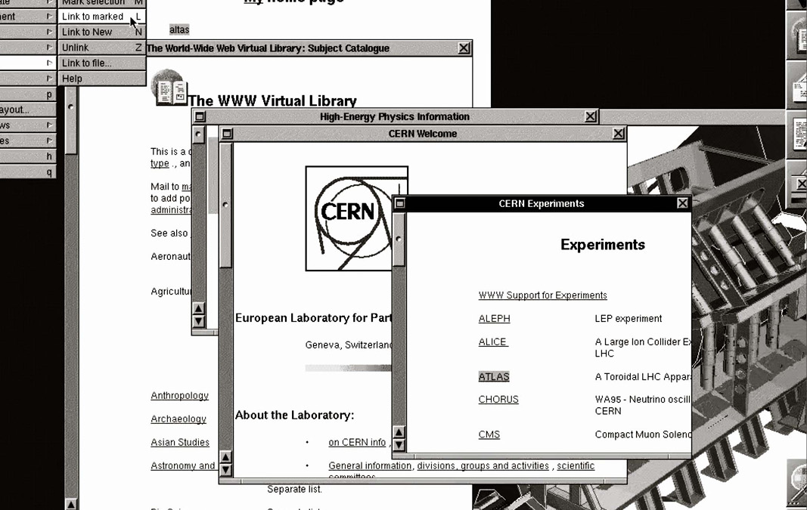
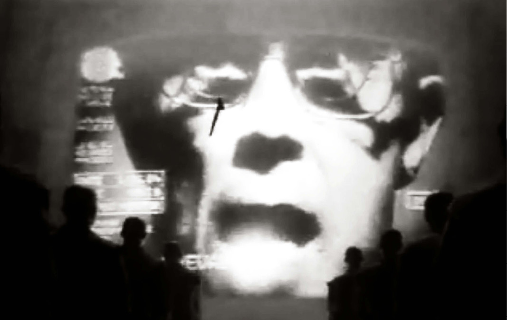

DESPITE THE CONSEQUENCES OF THE POWER THAT THE WEB ASSUMES TODAY, THE TRUTH IS THAT THERE WERE TIMES WHEN BOTH THIS WORLD-WIDE WEALTH OF INFORMATION AND THE COMPUTER AS A MEDIUM WERE SEEN AS OBJECTS OF A PROMISING FUTURE.
THE EXPECTATION OF THE WEB AND THE COMPUTER TO BECOME SPACES NOT ONLY FOR LEARNING AND COMMUNICATING, BUT ALSO FOR THE DEVELOPMENT OF PROBLEMS, EVENTUALLY CAME TO BE SUCCEEDED BY THE REALITY THAT, DESPITE ALL THESE QUALITIES BEING TRUE, THERE IS A DEEP AND COMPEX DIMENSION THAT IS MURKY AND OBSCURE TO THE UNSUSPECTING USER, LEADING TO SEE THE WORLD AS AN EXTRACTIVE INDUSTRY.
Demonstrations have had an important place in new media innovation. On the stage was Douglas Engelbart, with a huge projection screen behind him, and back in were most of the crew of their Augmentation Research Center (ARC). The demonstration was a huge, calculated risk.They took the risk because they believed in the power of the system they were planning to show.
ARC was creating tools for users to express and share concept structures.
Computer interfaces should be optimized for expert use and could require an up-front investment to learn. ARC’s research slowed, and the project was eventually to a commercial company. The new goals led instead to the “user friendly” systems at which most of us spend our days—systems designed to be optimal for a first-time user, rather than a skilled worker.

The World-Wide Web occupies the meeting point of many fields of technology.
Apart from being a place of communication and learning, and a new market place, the Web is a show ground for new developments. The incredible diversity of information available points to a very exciting future. The power of the Web is evident today. It demonstrates that the technologies that prevail don’t have to be the best ones—they just have to be good enough.
Other factors can allow a technology which is inferior in many specific ways to dominate. That is just what has happened with the hypertext technologies of the Web and also very overwhelmingly successful in linking and making accessible a world-wide wealth of information.
The true triumph of the Web is seen in the fulfillment of urgent public desire; the tense reloading of pages; a pool that is murky and profound, teeming with the useless and indispensable; the exploration that aim to grow the great record of knowledge and give voice to or change forever who we are.

Notions of dystopian destruction and surviving the apocalypse are not new.
They stem from the very emptying of Indigenous lands into the “New World”—a move that haunts “new media” and its frontier dreams. Cyberspace is an addictive consensual hallucination. Even a system that appears to perform spectacularly in training can make terrible predictions when presented with novel data in the world.
The development of full Artificial Intelligence (AI) could spell the end of the human race. Humans, who are limited by slow biological evolution, couldn’t compete and would be superseded. The belief that human intelligence can be formalized and reproduced by machines has been axiomatic since the mid-twentieth century.
AI = The Apocalypse. It ends human work; it ends human freedom; indeed, it ends everything human.
With each move to make computers more “user friendly,” that is, more and more opaque to the humans who use them, tasks once performed by humans have been embedded within the machines.
We are creating a world that all may enter without privilege or prejudice. Your legal concepts of property, expression, identity, movement, and context do not apply.
The Internet became an “electronic frontier” and thus a wilderness ripe for settler colonialism and exploitation. AI can seem like a spectral force—as disembodied computation—but these systems are anything but abstract. They are physical infrastructures that are reshaping the Earth, while simultaneously shifting how the world is seen and understood.
We are the conduit of everything else happening in the world. We’ve disrupted absolutely everything.
AI systems are expressions of power that emerge from wider economic and political forces. Mug shots of a woman are shared on the internet for researchers who would like to test their facial recognition software. These people are not seen so much as individuals but as part of a shared technical resource. A person standing in front of a camera in an orange jumpsuit, then, is dehumanized as just more data.
The National Institue of Standards of Technology mug shot databases are particularly disturbing because they represent the model of what was to come:
the unswerving belief that everything is data and is there for the taking.